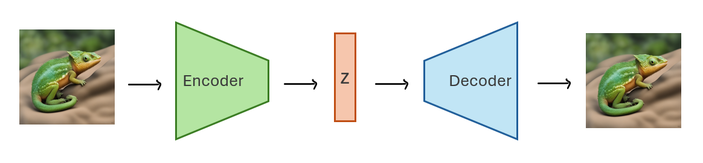
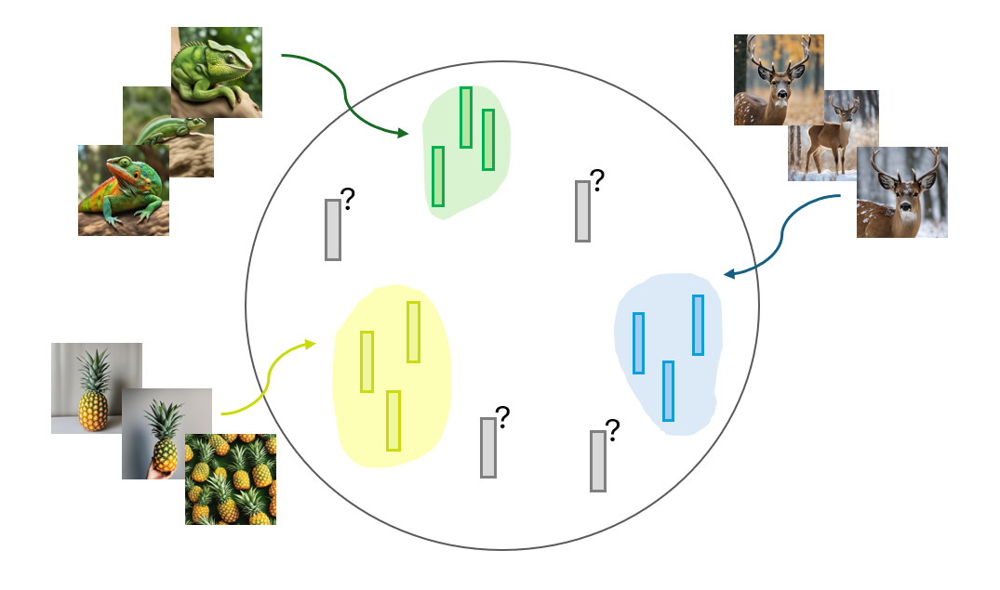
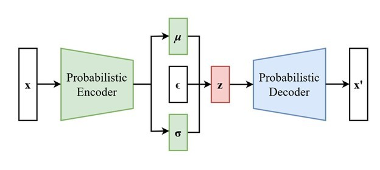
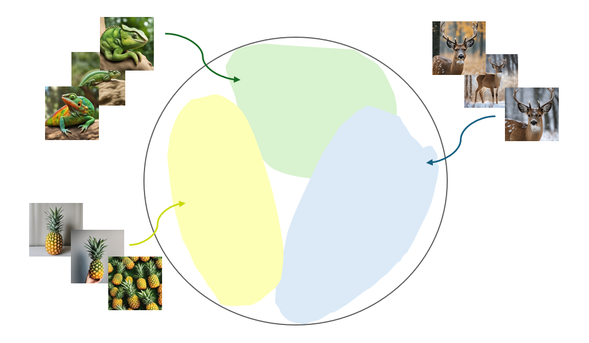

Exploring Autoencoders (AEs) and Variational Autoencoders (VAEs)
Imagine you have a magical machine that can not only compress your favorite photos into tiny codes but also recreate them.
These magical machines are called autoencoders.
They are unsupervised learner since they only need the input data without labels.

Introduction to Autoencoders (AEs)
Its consists of two main parts and primary purpose is to learn efficient representations (or encodings) of data, typically for the purpose of dimensionality reduction or feature learning.
Encoder: This part of the network compresses the input into a latent-space representation. It maps the input data to a lower-dimensional space, capturing the most critical features. Think of the encoder as a master sculptor who chisels down the input (your favorite photo) into a smaller, meaningful representation (a code). This compressed version captures the essence of the image.
Decoder: This part of the network reconstructs the input data from the latent-space representation. The goal is to recreate the original input as accurately as possible. The decoder is like an art restorer who takes the sculptor's code and reconstructs the original artwork from it.
The entire network is trained to minimize the difference between the input data and the reconstructed output, typically using a loss function such as Mean Squared Error (MSE).
Although Autoencoders (AEs) good at reconstruction, the embeddings of inputs in the latent space are often very scattered. This disorganization makes it challenging to generate new data, as the learned embeddings might occupy a small region with limited meaningful information within a vast latent space.

The Variational Autoencoder (VAE)
VAEs imposes a structure on the latent space through regularization: it forces the embeddings to place within a constrained space. This way the decoder part hopefully will be able to generate more meaningful outputs.
They also upgrade our machine with a sprinkle of variability by adding a touch of probability. VAEs doesn't just compress an input into a single code but it maps the input to a distribution over the latent space.
This means instead of having a fixed representation, each input gets a range of possible codes, adding flexibility and creativity to the mix. It means a single input can be represented with a (Gaussian) distribution.
To ensure that the model remains trainable despite the randomness involved in sampling from distributions we benefit from the reparameterization trick.

How VAEs Work
Encoder Function: \( \text{Encoder}(x) \rightarrow (\mu, \sigma) \).
The encoder transforms the input \( x \) into two vectors; mean vector \( \mu \) as the center of our distribution in the latent space
and standard deviation vector \( \sigma \) as the spread or variability.
Latent Space and Reparameterization Trick: \( z = \mu + \sigma \cdot \epsilon \). To generate latent variable \( z \), we sample from the Gaussian distribution defined by learned parameters \( \mu \) and \( \sigma \).
To impose randomness \( \epsilon \) from a standard normal distribution \( \mathcal{N}(0, I) \) we use the reparameterization trick to keep everything differentiable and trainable.
Decoder Function: \( \text{Decoder}(z) \rightarrow \hat{x} \). The decoder takes the sampled latent variable \( z \) and reconstructs the input \( x \).
It’s like translating the coordinates back into a recognizable photo \( \hat{x} \).
During Training, VAEs sums two loss function to ensure that our model learns to generate realistic data while maintaining a structured latent space.
1. Reconstruction Loss: Measures how well the decoder recreates the input. If our recreated photo looks different from the original, the reconstruction loss is high. Common metrics include Mean Squared Error (MSE) or Binary Cross-Entropy (BCE).
\[ \text{Reconstruction Loss} = \text{MSE}(x, \hat{x}) \text{ or } \text{BCE}(x, \hat{x}) \]
2. KL Divergence: Measures how the learned distribution \( q(z|x) \) (with mean \( \mu \) and variance \( \sigma^2 \)) deviates from the prior \( p(z) \), usually a standard normal distribution \( \mathcal{N}(0, I) \).
\[ \text{KL Divergence} = D_{KL}(q(z|x) || p(z)) \]
During Inference, we use all parts of the VAE to get \( \mu \), \( \sigma \), and \( \epsilon \) to generate \( \hat{x} \).

Disentangled VAEs: Bringing Order to Latent Space
While VAEs are fantastic, sometimes we want even more control over the latent space.
Imagine if our latent space universe had clearly defined regions, each corresponding to a different aspect of the data (like hair color, facial expression, etc.).
This is what Disentangled VAE aim to achieve.It modifies the loss function to encourage the latent variables to represent distinct, independent factors of variation in the data.
It introduces a hyperparameter \(\beta\) that scales the KL divergence term in the loss function:
By increasing \(\beta\), you increase the power of Gaussian distribution against reconstruction.
This encourages the model to learn more disentangled representations and makes the latent space more interpretable or controllable.
For instance, if one dimension of the latent space controls hair color and another controls facial expression, you can easily tweak these features independently in the generated images.
When to Use Which?
VAEs: Use VAEs when you need a smooth, continuous latent space and want to generate new data samples. VAEs are great for understanding the underlying distribution of the data and generating interpolations between data points.
Disentangled VAEs: Use when you need interpretable and controllable latent representations. Disentangled VAEs are ideal for applications where you want to manipulate specific features of the generated data.
GANs: Use GANs when you need high-quality, realistic data generation. GANs are often preferred for tasks that require very realistic outputs, such as image generation and video synthesis.
Wrapping Up
Variational Autoencoders (VAEs) open up a fascinating world of generative models by combining the power of autoencoders with probabilistic modeling.
Through the clever reparameterization trick, they make training feasible and effective, allowing for the generation of new, creative data samples.
Disentangled VAEs take this a step further by providing interpretable and controllable latent spaces, making them incredibly useful for specific applications.
So, next time you see a stunning piece of AI-generated art or a hyper-realistic synthetic image, you'll know the magical principles that might be behind it. Happy coding and generating!